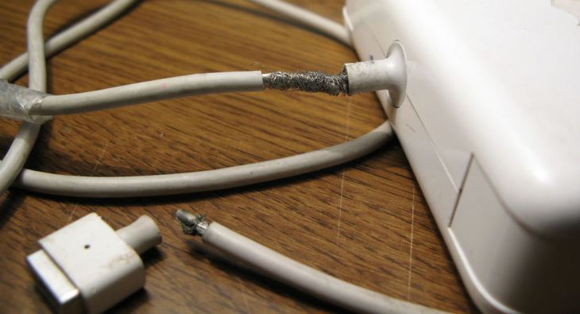
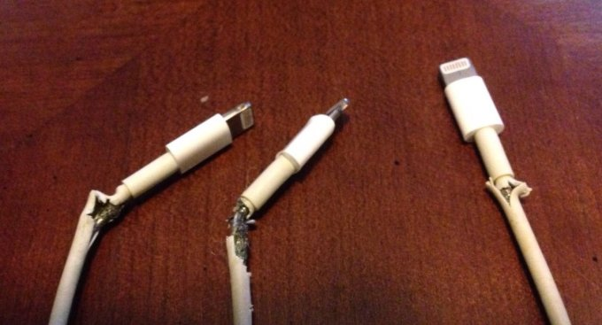
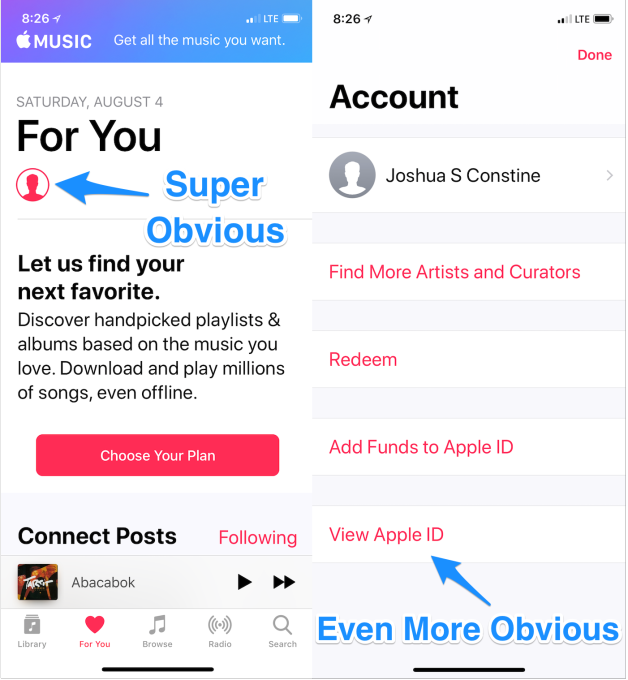
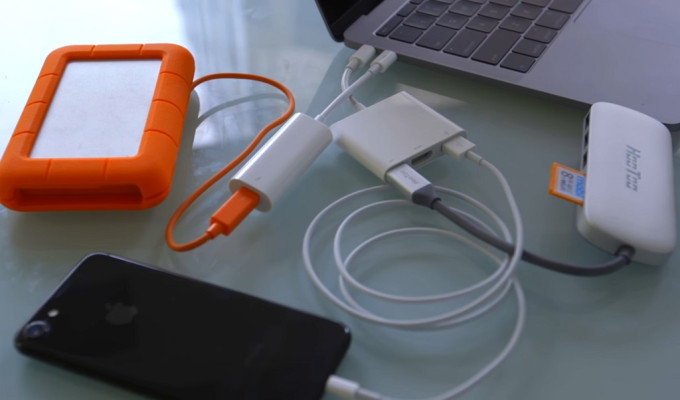

 For being the richest company ever with $243 billion in cash, Apple sure cuts corners in the stingiest ways. The hardware giant became the first trillion-dollar company this week. Yet it’s tough to reconcile Apple earning $11 billion in profit per quarter with it still screwing us over on cords and keyboards. The “it just works” philosophy has slipped through the cracks of the money-printing machine. It’s not that Apple couldn’t afford to fix the problems, it’s just ensnared in hubris such that it doesn’t see them as important.
We still turn to Apple because it makes the best core products. But the edges of the customer experience have frayed like the wires of a Lightning cable. The key to Apple’s fortune is obviously selling high margin iPhones, not these ways it nickels and dimes us. But the company has an opportunity to raise its standards after this milestone, and win back the faith that could push it to a $2 trillion market cap.
1. Frayed Charging Cables
Apple gives you that tingly feeling in the worst way. Can it not build Lightning cables and MacBook chargers a little sturdier? If you avoid losing one long enough to put in some serious use, it inevitably ends up splitting where the cord meets your iPhone or exits the laptop power supply. Whether it’s wrapping them in electrical tape or the spring of a retractable pen, people have come up with all sorts of Macgyver methods to make their Apple chargers last. It got so bad that Apple was sued into offering a MacBook charger replacement program, but that expired years ago. If these are what allow us to play with the fancy devices it invents, shouldn’t they get the same quality of industrial design?  Image via Sophia Cannon
2. Buried iTunes Subscriptions Cancellation
Want to cancel your Apple Music subscription or some other service you got roped into with a free trial? It’s SUPER easy. First, click the totally unlabeled and generic circle with a blotch in it that’s supposed to be a profile picture icon. You should see a “Manage Subscriptions” option…but you don’t. Instead, you’ll have to know to tap “View Apple ID”. Once you auth in with the same face or thumbprint that opened your phone in the first place you’ll find the option to cut them off. And as thank you for this convenience, you’ll get to pay 30 percent extra on some subscriptions if you pay through Apple. It’s clearly exploitative dark pattern design. 
3. Keyboard Claptrap
The MacBook keyboard is the on-ramp to the information superhighway, yet a single grain of sand can cause a pile up. Renowned Apple pundit John Gruber called it “one of the biggest design screwups in Apple history”. The new butterfly key design Apple rolled out in 2016 can get jammed by dust, requiring a lengthy disassembly process often requiring a professional to fix. Suddenly your work grinds to a halt. Apple wouldn’t always cover this repair, even under warranty. It took a lawsuit and tons of public backlash for Apple to offer free fixes, and that still typically leaves you without a laptop for a few days. I’m typing this article on a cracked-screen 2013 MacBook Pro because I refuse to upgrade until they make the keyboard design more resilient.

4. Killing Affiliate Fees Blogs Rely On
Apple benefits from a legion of blogs obsessing over its hardware and software, hyping up everything it sells. Just this week it returned that favor by announcing it will cut off one of their core sources of revenue. Websites would previously earn a 7 percent commission from Apple in exchange for affiliate link clicks leading to purchases on the App Store. But over the past few years, Apple has begun to sell ads inside the App Store too, competing for advertisers with those external blogs. It’s also built up its own editorial team that curates what’s featured, and apparently doesn’t want competition in being a king-maker. So in October Apple is shutting down the affiliate program that app review sites like TouchArcade and AppShopper depend on, potentially spelling their doom.

5. Dongle Hell
What’s the opposite of “it just works”? Paying extra to lug around a slew of gangly cord connectors you need just to plug things into your laptop or phone. Dongles are the emblem of Apple’s abandonment of the user experience. A Thunderbolt 2 to Thunderbolt 3 dongle runs $50 while it will cost you $9 to plug in any pair of headphones from the past half-century once you’ve inevitably lost the Lightning dongle you’re allocated. Apple loves pushing us towards its vision of tomorrow, like Bluetooth headphones (that it sells) and USB-C fast-chargers (that it sells). But ditching headphone jacks and old school USB ports makes Apple’s latest devices incompatible with sanity. Even its own commercial shows musician Grimes struggling with her dongles. Sorry you can’t pass me the aux cord. I’m from the future. 
I copied this article for illustration from TechCrunch